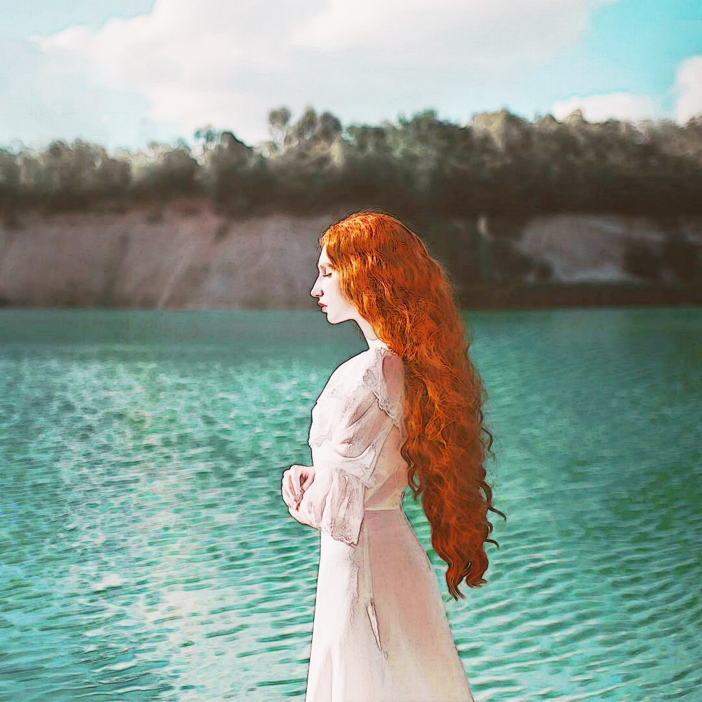
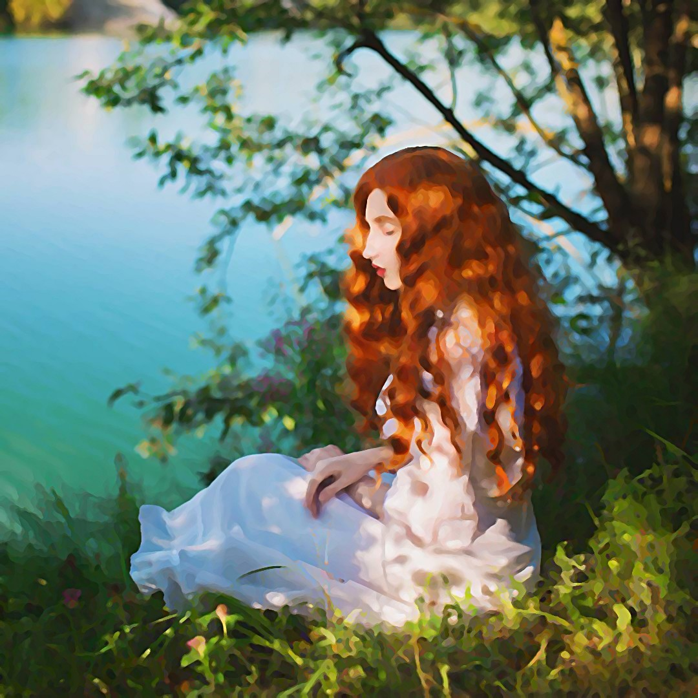

Npc Büyücü: Adras d'IbelinYunanistanYıllar, beraberinde getirdiği başarı ve başarısızlıklardan çıkarılan başarı tohumlarıyla birlikte geçip giderken, vücudun buna verdiği tepki yorgunluk ve yaşlanma oluyordu. Günler geçip giderken vücutta yaptığı tek olumlu değişim beyinde yani tecrübeler ve anılarda kendini gösteriyordu; tabi her şey yolunda giderse. Seksen yaşını geçen Adras, bu konuda çok şikayetçi olmasa da, yaşlanmış olmanın getirdiği sorumluluklarla geçiriyordu son yıllarını. Yaşlı adam sona doğru yaklaştığı hissine kapılmıştı bu günlerde. Hayatı boyunca tırmandığı başarı merdivenindeki en yüksek basamağa çıkmaktı hissettiği son, ölüm değildi. Bu doğrultuda, çoktan genişleyen ufkunu sonunda somut olarak da genişletebilmişti. Dünyanın bir çok yerine gerek siyasi gerekse ekonomik olarak, küçük ama etkili dokunuşlarla, isterse birbirine katıyor isterse de kendince bir düzene sokuyordu. Bu konuda ki en büyük hedefi, ileride daha büyük sorunlara yol açacağını düşündüğü, Türkleri ikna ettiği Kıbrıs harekatının gerçekleşmesiydi. Silahlar ve para hazırdı, geriye sadece diplomatik yönden birkaç kelam etme aşaması kalmıştı. Buda zaten işin en kolay ama can alıcı kısmıydı. Bu stratejik hamle sayesinde Anadolu'ya ve Balkanlar'a birçok açıdan müdehaleye erişimi olacaktı.
Ama şimdi Adras'ın ilgilenmesi gereken, yıllardır aklında bulunan, bir mesele vardı. Belki de yüzleşmeye, tekrar anıların tazelenmesine katlanmaya yetecek gücü ancak kendinde bulabilmişti. Tırmandığı o basamakların en üstüne çıkmak üzere olduğunu hissetmeye ihtiyacı vardı sanki. Karşısında dikilen yaşlıca adamın hemen yanında duran uzun, büyük ve üstü örtülü gizli hazineye ulaşmasının vakti gelmiş gibi hissediyordu.
"Bay d'Ibelin, ettiğiniz tarife uygun çizdim." dedi hemen yanında duran, kendi yaptığı tablonun yanında dikilen adam. Adras'ın uzun zamandır hissetmediği duyguları yansıtan gözleri merakla üstü örtülü tabloya çevrildi. Bakışlarından dışarı taşan heyecanı ve korkuyu geçen onca yıldan sonra ilk defa tecrübe ediyordu. Yunanistan'da oldukça ün yapmış bir sanatçıyı bulup ödediği yüklü miktarda ki para, sahip olacağı hazineden kat kat daha değerliydi. Sanatçı yaptığı eserin mükemmelliği ile yeterince övünemediğinden, düşündüklerini vücut diline yansıtmış, dünyanın en harika şeyini yaratmış bir tavırla kasılıyordu.
"Sizin için önemli biri olmalı." dedikten kısa süre sonra tabloyu açığa çıkarmak için üzerindeki örtüyü yavaşça aşağı doğru çekti. O andan itibaren yaşlı adamın bakışlarına hakim olan duygular yerini hayranlığa, aşka ve özleme bırakmıştı. Büyülendiği şey resimden çok resmin içindekiydi.
"Sofia..." dedi resme yaklaşırken sesi kısık çıkmıştı. Yavaşça kalkan sağ elini resmin çeşitli yerlerinde gezdirirken konuşmaya başladı
"Saçları güneş ışığı değdiğinde nasıl güzel parlardı. Kıvrıla kıvrıla beline kadar inerdi." dedi parmak uçlarıyla sanki gerçekten onun yumuşacık saçlarının arasında geziniyormuş gibi
"Ten rengi o kadar beyazdı ki, saflığın vücut bulmuş haliydi." bu sefer ressamın beyaz fırça darbeleriyle renklendirdiği yüz hatlarında gezindi parmakları.
"Bu beyaz elbisesi vardı üzerinde o gece..." aklına dolan o kötü anıyla birlikte geri çekti ellerini sanki görünmeyen bir aleve dokunmuş gibi.
"Hangi gece Bay d'Ibelin?" merakla soru soran ressama çevirdi hiddetle parlayan gözlerini. Yanlış bir şey sorduğunu sanan adam korkuyla birkaç adım geriye giderken
"Bir tane daha yaptım...." telaşla arkada duran, biraz daha küçük boyutlardaki diğer bir tabloyu gösterdi. Bunun da üstünde bir örtü vardı.
"... yani size hediyem olsun, hiç bir maddi beklentim yok." konuşurken kelimelerin aslında o an korkuyla ağızdan döküldüğü belliydi. Adamın hediyeden ziyade daha fazla maddi bir beklenti içerisinde ikinci bir tablo daha yaptığını adı gibi biliyordu Adras. Bakışları ressamın açmak üzer olduğu diğer bir resime kilitlendi. İlkinin aksine biraz daha yakından ve daha detaylı görünüyordu. Biricik Sofia'sının güzelliği yine yakıp geçmişti Adras'ı. Dıştan söylemese de iyi iş çıkartmıştı ressam. Matthew en iyisini bulacağını söylemişti ve başarmıştı demekki.
"Tamamdır gidebilirsin." dedi otoriter sesiyle. Resimler güzelce çerçevelenip ait oldukları duvara asılmayı bekleyeceklerdi bir süre.
"Ödemeyi ne zaman alırım." dedi ressam gitmeden önce. Aslında o an bir şeylerin ters olduğunu, resimleri çizenin bu adam olmadığını sezdi. Sesini çıkartmadan az önce içeri giriş yapan Matthew'e doğru bir bakış attı.
"Matthew, ilgilenirsin." dedi bu sefer sadık adamıyla konuşuyordu.

